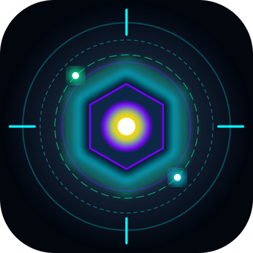

Rogue Survivor — a roguelite idle tower defense. Defend the core, pick combat Perks each level, and grow permanently stronger with every run.
Ion Siege is a roguelite idle tower defense game: your tower fires on its own while you defend against waves of enemies, choosing a Perk every time you level up during the run. Runs are temporary, but the Coins, Gems, and Talents you earn stay with you forever, making every future run stronger.
Clear a Sector's waves to unlock the next one, reach Sector Milestones for bonus rewards, and take on Endless mode once you've conquered a Sector to see how far you can really go.
Ion Siege is created with a commitment to fair, transparent progression — chest drop rates are published in-app under Settings.